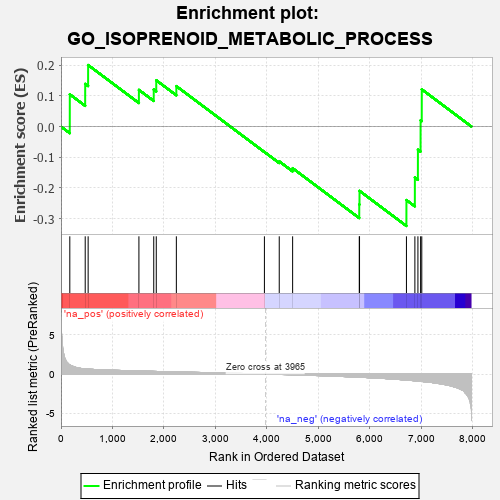
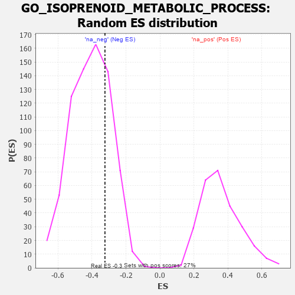

| | | Dataset | 7d |
| Phenotype | NoPhenotypeAvailable |
| Upregulated in class | na_neg |
| GeneSet | GO_ISOPRENOID_METABOLIC_PROCESS |
| Enrichment Score (ES) | -0.32399547 |
| Normalized Enrichment Score (NES) | -0.79258335 |
| Nominal p-value | 0.74079126 |
| FDR q-value | 0.9943459 |
| FWER p-Value | 1.0 |
Table: GSEA Results Summary

Fig 1: Enrichment plot: GO_ISOPRENOID_METABOLIC_PROCESS
Profile of the Running ES Score & Positions of GeneSet Members on the Rank Ordered List
| PROBE | GENE SYMBOL | GENE_TITLE | RANK IN GENE LIST | RANK METRIC SCORE | RUNNING ES | CORE ENRICHMENT | | 1 | DGAT1 | | | 171 | 1.146 | 0.1050 | No |
| 2 | LRP1 | | | 470 | 0.648 | 0.1391 | No |
| 3 | HTRA2 | | | 527 | 0.621 | 0.2006 | No |
| 4 | IDI1 | | | 1513 | 0.389 | 0.1196 | No |
| 5 | COQ2 | | | 1801 | 0.337 | 0.1207 | No |
| 6 | DHDDS | | | 1850 | 0.328 | 0.1509 | No |
| 7 | DPM1 | | | 2240 | 0.270 | 0.1318 | No |
| 8 | GPC6 | | | 3950 | 0.002 | -0.0828 | No |
| 9 | GPC1 | | | 4238 | -0.048 | -0.1135 | No |
| 10 | NPC2 | | | 4498 | -0.093 | -0.1357 | No |
| 11 | PMVK | | | 5792 | -0.403 | -0.2538 | Yes |
| 12 | RDH13 | | | 5797 | -0.405 | -0.2096 | Yes |
| 13 | EGFR | | | 6708 | -0.765 | -0.2396 | Yes |
| 14 | ABCA4 | | | 6872 | -0.851 | -0.1661 | Yes |
| 15 | LRP8 | | | 6931 | -0.889 | -0.0753 | Yes |
| 16 | PLB1 | | | 6983 | -0.925 | 0.0204 | Yes |
| 17 | RBP2 | | | 7006 | -0.939 | 0.1213 | Yes |
Table: GSEA details [plain text format]

Fig 2: GO_ISOPRENOID_METABOLIC_PROCESS: Random ES distribution
Gene set null distribution of ES for GO_ISOPRENOID_METABOLIC_PROCESS